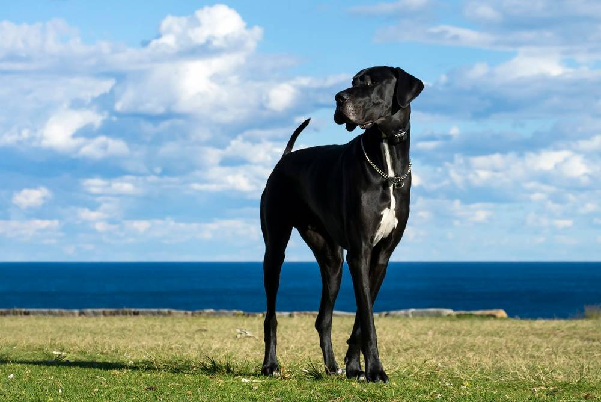

Породы собак
Вес немецкого дога – сколько весят собаки этой породы
13 марта 2026
6 минут на чтение
261 просмотр

Эта порода широко известна во всем мире и разводится во многих странах. Она окончательно сформировалась в конце 19 в., но далекие предки догов, вероятно, жили еще в Древнем Египте. Некоторые ее представители в разные годы попадали в «Книгу рекордов Гиннесса» как самые высокие собаки, их рост в холке превысил метр.
Контролировать, сколько весит немецкий дог, очень важно, поскольку питомцы такого размера часто сталкиваются с заболеваниями суставов, способными усугубить или даже спровоцировать ожирение. Отклонения от нормы наносят вред и здоровью собаки в целом, а иногда являются симптомами уже имеющихся нарушений.
Сколько весит немецкий дог – рекомендуемые нормы
Эта порода относится к гигантским, ее представители – одни из самых крупных собак в мире. Внушительный размер предполагает длительное взросление, как физическое, так и психическое. Зрелости питомцы достигают примерно к 2 годам, до этого их масса может увеличиваться за счет высоты в холке и развития мускулатуры.
| Возраст питомца |
Вес в норме (кг) |
Рост (см) |
|
Мальчики | Девочки |
Мальчики | Девочки |
| 1 месяц | 2,5-3,7 | 2,3-3,5 | 24-30 | 22-27 |
| 2 месяца | 8-12 | 7,5-11 | 35-43 | 33-40 |
| 3 месяца | 14,5-20 | 12-18 | 45-56 | 42-55 |
| 4 месяца | 22-29 | 18-24 | 54-64 | 52-62,5 |
| 5 месяцев | 28-37,5 | 20-27 | 63-68 | 58-65 |
| 6 месяцев | 31,1-45,2 | 23-30 | 65-70 | 60-68 |
| 7 месяцев | 34-49 | 26-34 | 67-72 | 62-69 |
| 8 месяцев | 36,4-51 | 28,5-37 | 69-75 | 64-70 |
| 9 месяцев | 37,5-54 | 30-39 | 71-78 | 66-71 |
| 10 месяцев | 38-56 | 32,5-41 | 73-80 | 67-73 |
| 11 месяцев | 39,5-58 | 38-43 | 74-82 | 68-75 |
| 12 месяцев | 41-61 | 40-45 | 75-84 | 69-78 |
| 2 года | От 63 | От 47 | 78-90 | 70-84 |
| 3 года | От 65 | От 50 | 80-90 | 72-84 |
Важно: Такая динамика является примерной, потому что скорость взросления – индивидуальный процесс. Среди представителей породы иногда встречаются и более крупные особи. Рост, превышающий указанные параметры, признается отклонением от стандарта и не приветствуется экспертами, но на качества собаки как домашнего питомца не влияет.
Факторы, определяющие рост и вес немецкого дога
Главное условие, от которого зависят эти показатели, – породная принадлежность. Примерная высота собак закладывается на генетическом уровне в ходе селекции и фиксируется в стандарте.
Другие значимые факторы: пол (кобели крупнее сук), питание, уход, здоровье, наследственность. Также для питомцев важна активность, помогающая поддерживать физическую форму, и эмоциональный комфорт.
Как долго растут щенки немецкого дога?
Крупные и гигантские породы развиваются медленнее всех остальных. Зрелость у их представителей наступает примерно к 2 годам, это особенно актуально для сук, организм которых формируется дольше. Период наиболее активного роста – первые месяцы жизни. К году питомцы обоих полов достигают близкой к итоговой высоты в холке, прирост мышечной массы наблюдается дольше, иногда до трехлетнего возраста, особенно у кобелей.
Действия владельца при избыточном или недостаточном весе питомца
Существуют два варианта отклонения массы тела от нормы – ожирение и истощение (кахексия).
Возможные причины лишнего веса:
- частое переедание и отсутствие режима кормлений
- малоподвижный образ жизни
- кастрация (если рацион после нее не был скорректирован)
- побочный эффект от приема медикаментов
- заболевания эндокринной системы, например, гипотиреоз
Истощение чаще всего развивается на фоне:
- хронических инфекций
- заражения кишечными паразитами
- болезней желудочно-кишечного тракта
- гормональных нарушений, например, диабета или гипотиреоза
- онкологии
- хронической болезни почек
Для успешной коррекции веса немецкого дога необходимо узнать причину его отклонения от нормы. Если масса тела изменилась незначительно (менее 10% при истощении или 10-15% – при ожирении), можно попробовать помочь питомцу, скорректировав калорийность и режим питания. При значительных отклонениях важен ветеринарный контроль. Если у собаки обнаружены заболевания, необходимо полноценное лечение.
Как поддерживать оптимальный вес питомца?
Для гигантских пород, к которым относится немецкий дог, стабильная масса тела – одно из важнейших условий сохранения здоровья. Ключевые меры для поддержания стабильного веса – правильное питание и умеренно подвижный образ жизни. Потребность в определенных нутриентах у разных возрастных групп отличается, рацион должен соответствовать этому критерию.
Контролировать, сколько весит немецкий дог, и следить за динамикой массы тела можно с помощью взвешивания и визуальной оценки. При внешнем осмотре фигура животного должна быть подтянутой, с выраженной талией. Если ребра под кожей уверенно прощупываются – это соответствует норме, но в случаях, когда почувствовать их сложно или невозможно – у питомца имеется избыточный вес.
Источники:
- Mila H., Grellet A., Feugier A., Chastant-Maillard S. Differential impact of birth weight and early growth on neonatal mortality in puppies // The Journal of Animal Science, 2015.
- Стандарт FCI № 235. Немецкий дог.